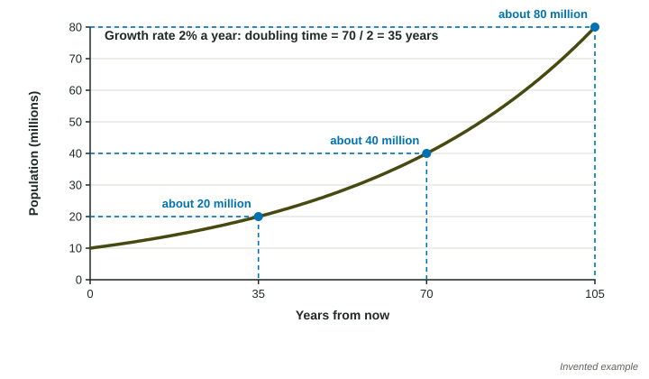

The exam's most-missed calculations live in this topic: the rate of natural increase, the rule of 70, and the year a population doubles. Each is short, but each has a trap. This page builds them step by step, with every setup shown the way a reader wants to see it.
Crude birth and death rates
The crude birth rate (CBR) is the number of births in a year for every 1,000 people. The crude death rate (CDR) is the number of deaths in a year for every 1,000 people. "Crude" means they count the whole population, not one age group.
To get a crude rate from counts, divide by the population and multiply by 1,000. A country of 50 million people (50 million ) with 1,100,000 births has
Rate of natural increase
The rate of natural increase is growth from births and deaths alone, as a percent per year:
Why divide by 10? The rates are per 1,000 people, and a percent is per 100. Dividing by 10 turns "per 1,000" into "per 100".
Worked example 1. Country J has a CBR of 36 and a CDR of 8. What is its rate of natural increase?
Setup: . Answer: per year.
Trap: leaving the answer at 28. That is the gap per 1,000 people, not a percent.
The rule of 70 and the year a population doubles
For a population growing at a steady percent each year, the doubling time is about years. Use the rate in percent (2.8, not 0.028).
Worked example 2. Country J had 40 million people in 2025 and grows 2.8% a year. In what year will it have about 80 million?
Doubling time: years.
Year: .
Trap: answering 25. The question asks for a year, so add the doubling time to the start year. Read every question to its last word.
To go from 12 million to 48 million is two doublings (12 to 24 to 48). At 3.5% a year the doubling time is years, so it takes years.

Migration
Births and deaths are only part of the story. Immigration (people moving in) adds to a population, and emigration (people moving out) subtracts. The total growth rate counts all four:
Worked example 3. Country N starts the year with 50,000,000 people and has 1,100,000 births, 400,000 deaths, 100,000 immigrants and 50,000 emigrants.
Setup: . Answer: .
A country whose deaths outnumber its births can still grow if enough people move in.
Malthus and the limits to growth
In 1798 Thomas Malthus argued that population grows in a doubling series while food grows only by steady additions, so famine, disease or war would hold population back. Since then the world has grown from about 1 billion people (around 1800) to 8 billion (2022, United Nations), and food per person has risen in most places. Many scientists still ask Malthus's question about limits, pointing to soil, fresh water and fuel that are being used faster than they are replaced.
On the exam
| Asked for | Setup | Classic slip |
|---|---|---|
| rate of natural increase | (CBR - CDR) / 10 | leaving it per 1,000, or dividing by 100 |
| doubling time | 70 / rate in % | using the rate as a decimal |
| year it doubles | start year + 70 / rate | giving the doubling time, not the year |
| total growth rate | ((births + imm.) - (deaths + emig.)) / population × 100 | leaving out migration, or the × 100 |